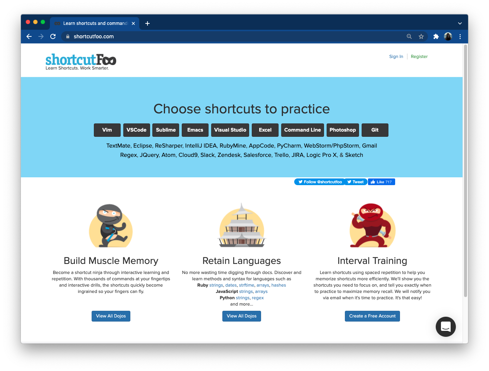
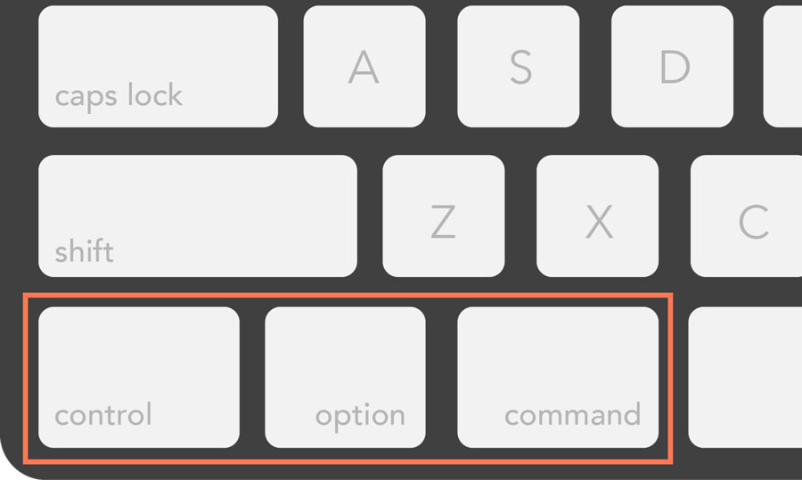

…and other keyboard shortcuts to make you a more efficient coder
Sam Csik | Data Training Coordinator National Center for Ecological Analysis & Synthesis
Master of Environmental Data Science | Fall 2022 Bren School of Environmental Science & Management
Slides & source code available on
Keyboard shortcuts…are they really worth my time?
Because both your hands remain on the keyboard, shortcuts are often faster than a mouse
Yes, learning shortcuts does take some patience and practice, but it will save you time in the long run
Good news: lots keyboard shortcuts are universal, meaning you can use them across a variety applications
Looking for more shortcuts? Clicking on or hovering over menu items/buttons in many applications will reveal the corresponding keyboard shortcut
Make it a game
shortcutFoo was created by programmers for programmers in an attempt to make learning your editor fun, easy, and effective. Akin to the days of first learning how to type on a keyboard, shortcutFoo aims to help programmers accomplish more in less time and with fewer keystrokes.

Learn and practice shortcuts for all your favorite applications – ranging from IDEs like RStudio and VSCode to apps like Twitter, GitHub, and Slack. Start a new game at https://www.shortcutfoo.com/app/dojos.
Mac vs. Windows
Keyboard shortcuts typically involve pressing two or more keys in a specific order. Most times, the key combos include at least one of the following: control, option, command, alt.

Macs use control, option, and command keys
Windows machines use the ctrl (Control) and alt keys